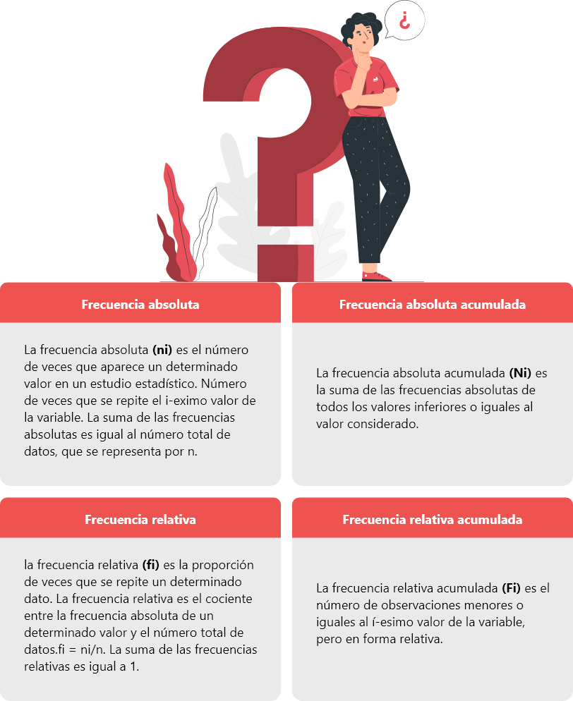
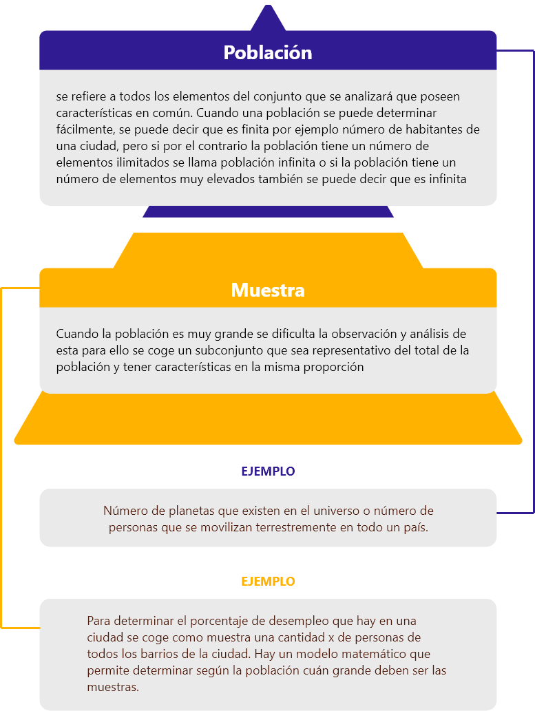
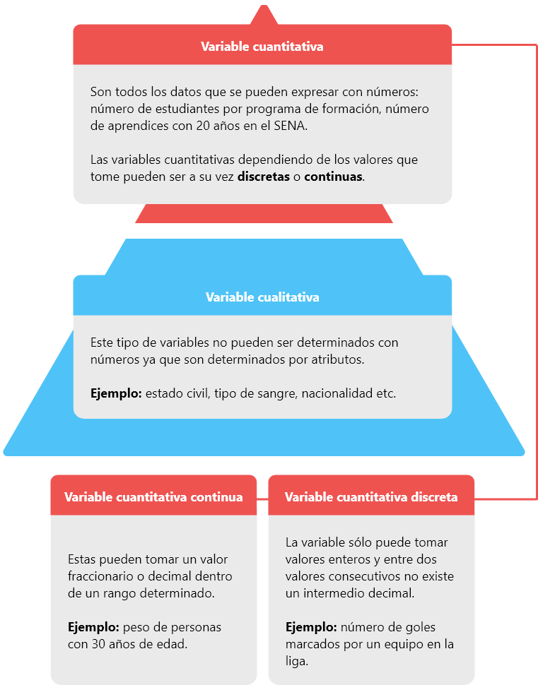
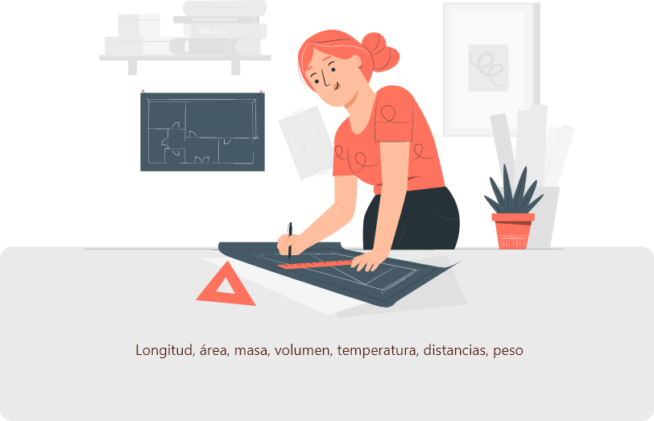

1. Estadística descriptiva
1.1 Conceptos básicos de estadística
La palabra estadística tiene su origen en el término alemán statistik, que significa ciencia del estado.
Esta rama de las matemáticas le proporcionó a la civilización los rasgos de orden que aún hoy permanecen, como el censo de habitantes, recaudo de impuestos y transacciones de bienes y servicios.

Existen indicios que desde el año 3500 A.C los habitantes de la isla de Cerdeña llevaban cuentas rigurosas del ganado y de la caza; los egipcios por su lado llevaban un censo poblacional y conteo de sus riquezas, después los babilonios plasmaron en tablillas los datos de su producción agrícola; los griegos hacia el año 549 A.C realizaban censos regulares para ponderar su capacidad militar y determinar los derechos de voto, de esta manera la estadística fue ganando terreno en el crecimiento de los primeros imperios, pero, no fue hasta el siglo XV que en manos de grandes matemáticos y con ayuda del método científico se hicieron grandes cálculos que permitieron aplicar a la fuerza del comercio internacional.
Fue así como se dividió la estadística en dos grandes campos:
1.2 Tabla de frecuencias
Una tabla de frecuencias es una herramienta básica de la estadística descriptiva y esta se encarga de dar orden a los datos tomados de una muestra, en esta tabla se pueden organizar datos de variables cuantitativas o cualitativas.
Para realizar una tabla de frecuencias hay que conocer cuáles son las columnas que la componen:
1.3 Elaboración de gráficos
A un nivel estadístico y matemático, denominamos gráfica a aquella representación visual a partir de la cual pueden representarse e interpretarse valores generalmente numéricos. De entre las múltiples informaciones extraíbles de la observación de la gráfica podemos encontrar la existencia de relación entre variables y el grado en que se da, las frecuencias o la proporción de aparición de determinados valores.
El más conocido y utilizado de todos los tipos de gráficos es el gráfico o diagrama de barras. En éste, se presentan los datos en forma de barras contenidas en dos ejes cartesianos (coordenada y abscisa) que indican los diferentes valores. Generalmente se emplea para representar la frecuencia de diferentes condiciones o variables discretas (por ejemplo, la frecuencia de los diferentes colores del iris en una muestra determinada, que solo pueden ser unos valores concretos). Únicamente se observa una variable en las abscisas, y las frecuencias en las coordenadas.
El también muy habitual gráfico en forma de “quesito”, en este caso la representación de los datos se lleva a cabo mediante la división de un círculo en tantas partes como valores de la variable investigada y teniendo cada parte un tamaño proporcional a su frecuencia dentro del total de los datos.
Aunque a simple vista muy semejante al gráfico de barras, el histograma es uno de los tipos de gráfica que a nivel estadístico resulta más importante y fiable. En esta ocasión, también se utilizan barras para indicar a través de ejes cartesianos la frecuencia de determinados valores, pero en vez de limitarse a establecer la frecuencia de un valor concreto de la variable evaluada refleja todo un intervalo.
En este tipo de gráfico se emplean líneas para delimitar el valor de una variable dependiente respecto a otra independiente. También puede usarse para comparar los valores de una misma variable o de diferentes investigaciones utilizando el mismo gráfico (usando diferentes líneas). Es usual que se emplee para observar la evolución de una variable a través del tiempo.
El gráfico de dispersión o gráfico xy es un tipo de gráfico en el cual mediante los ejes cartesianos se representa en forma de puntos todos los datos obtenidos mediante la observación. Los ejes x e y muestran cada uno los valores de una variable dependiente y otra independiente o dos variables de la que se esté observando si presentan algún tipo de relación.
1.4 Medidas de tendencia central
Las medidas de tendencia central son parámetros estadísticos que informan sobre el centro de la distribución de la muestra o población estadística.
A veces, tratamos con una gran cantidad de información. Variables que presentan muchos datos y muy dispares. Datos con muchos decimales, de diferente signo o longitud. En estos casos, siempre es preferible calcular medidas que nos ofrecen información resumida sobre dicha variable. Por ejemplo, medidas que nos indiquen cuál es el valor que más se repite.
| Media |
|---|
| La media es el valor promedio de un conjunto de datos numéricos, calculada como la suma del conjunto de valores dividida entre el número total de valores. |
| Mediana |
|---|
| La mediana es un estadístico de posición central que parte la distribución en dos, es decir, deja la misma cantidad de valores a un lado que a otro. Las fórmulas propuestas no nos darán el valor de la mediana, lo que nos darán será la posición en la que está dentro del conjunto de datos. |
| Moda |
|---|
| La moda es el valor que más se repite en una muestra estadística o población. |
Veamos un ejemplo practico
Para representar las medidas de tendencia central de una forma práctica realicemos un ejemplo.
Andrés se encuentra cursando el grado 10 en una institución educativa. El profesor de matemáticas le envío todas las notas recolectadas durante el periodo académico como se muestra en la tabla:
Andrés quiere saber si aprobó la materia de matemáticas para el periodo presente. Andrés investigó en internet y encontró que debe realizar el promedio entre esas notas para así saber cuál sería su nota final.
Para realizar el promedio o la media. Se debe sumar todas las notas obtenidas durante el periodo y luego dividir por el número de notas. Así:
El resultado del promedio es de 3.02 lo que quiere decir que aprobó matemáticas.
Andrés también quiere determinar si hubo actividades en las que obtuvo la misma nota. Para lo cual debe analizar los datos y encontrar el dato que más se repite obteniendo que la nota de 4 la obtuvo en el taller número 1 y taller número dos. Por lo tanto, esta es la moda ya que es la nota que más se repite.
Así mismo para encontrar la mediana debemos encontrar el valor que se encuentra en toda la mitad organizando las frecuencias de mayo a menor o de menor a mayor.
Si verificamos, el valor que se encuentra en todo el medio es la nota 3.0 lo que nos determina que ese es el valor correspondiente a la mediana.
1.5 Estadística analítica o inductiva
En esta parte solamente nos vamos a centrar en la estadística descriptiva, por el momento sólo vamos a definir la estadística inductiva:
Es la parte de la estadística que infiere conclusiones, permite predecir algunos comportamientos de ciertos fenómenos. Esta se apoya en la estadística descriptiva y la probabilidad y sus herramientas contraste de hipótesis intervalos característicos o de confianza, errores, teorema del límite central.
Población y muestra
En esta parte solamente nos vamos a centrar en la estadística descriptiva, por el momento sólo vamos a definir la estadística inductiva:
1.6 Variables estadísticas
Las variables estadísticas según su naturaleza pueden ser de dos tipos: cuantitativas o cualitativas.
Veamos un ejemplo practico
Partiendo y teniendo en cuenta la información hasta el momento, realicemos un ejemplo estadístico donde evidenciamos de forma práctica los conceptos abordados.
En el Centro de servicios y gestión empresarial (CESGE) del SENA se desea saber el género de libros que leen los aprendices, para lo cual se entrevistaron a 100 de ellos y los resultados obtenidos fueron los siguientes:
19 aprendices leen libros de ficción.
25 aprendices leen libros de farándula.
15 aprendices leen libros de deportes.
12 aprendices leen libros de ciencias.
15 aprendices leen libros de terror.
14 aprendices no leen.
2. Sistema de unidades
2.1 Sistema internacional de unidades
La observación de un fenómeno es en general, incompleta a menos que dé lugar a una información cuantitativa. Para obtener dicha información, se requiere la medición de una propiedad física. Así, la medición constituye una buena parte de la rutina diaria del físico experimental.
La medición es la técnica por medio de la cual asignamos un número a una propiedad física, como resultado de una comparación de dicha propiedad con otra similar tomada como patrón, la cual se ha adoptado como unidad.
Las unidades de medida más utilizadas son las de:
2.2 Sistema de unidades inglés
El sistema inglés de unidades son los elementos no-métricos que se utilizan actualmente en los Estados Unidos y en muchos territorios de habla inglesa (como en el Reino Unido), pero existen discrepancias entre los sistemas de Estados Unidos e Inglaterra.
Este sistema se deriva de la evolución de las unidades locales a través de los siglos, y de los intentos de estandarización en Inglaterra. Las unidades mismas tienen sus orígenes en la antigua Roma. Hoy en día, estas unidades están siendo lentamente reemplazadas por el Sistema Internacional de Unidades, aunque en Estados Unidos la inercia del antiguo sistema y el alto costo de migración ha impedido en gran medida el cambio.
Glosario
Área:superficie acotada, que se distingue de lo que la rodea.
Conjunto:es una colección de elementos de características similares considerada en sí misma como un objeto, un conjunto es aquel que está definido por sus miembros y nada más.
Coordenada:línea recta que sirve para determinar la posición de un punto en un plano.
Curva:es una línea cuyos puntos sucesivos cambian continuamente de dirección sin formar ángulo.
Dimensión:magnitud que junto con otras; sirve para definir un fenómeno físico; específicamente, magnitud o magnitudes que se consideran en el espacio para determinar el tamaño de las cosas.
Eje:recta alrededor de la cual se supone que gira una línea para generar una superficie o una superficie para generar un cuerpo.
Igualdad:se puede establecer mediante la comparación de dos objetos o unidades, las cuales una es similar a la otra.
Incógnita:es un elemento constitutivo de una ecuación matemática, y describe una propiedad verificada por un valor desconocido, por lo general un número.
Línea:sucesión continua de puntos en el espacio.
Magnitud:es una medida asignada para cada uno de los objetos de un conjunto medible. Formada por objetos matemáticos.
Medida:cantidad que resulta de medir una magnitud.
Oblicuo:que forma con otra línea o plano un ángulo que no es recto.
Perímetro:es la línea o el conjunto de líneas que forman el contorno de una superficie o de una figura.
Polígono:figura geométrica plana que está limitada por tres o más rectas y tiene tres o más ángulos o vértices.
Proporción:es la relación de igualdad entre dos razones matemáticas, o la comparación entre dos razones matemáticas.
Razón:es una razón binaria entre magnitudes, se expresa como a es a b, o a: b, numéricamente una razón se puede expresar como una fracción o un decimal.
Teorema:proposición matemática demostrable a partir de axiomas o proposiciones ya demostradas.
Trigonometría:es una rama de matemáticas cuyo significado etimológico es la medición de triángulos.
Volumen:se define como el espacio que ocupa un cuerpo.
Material complementario
| Nombre del documento o material | Tipo de material | Enlace del recurso |
|---|---|---|
| Mora, Zambrano Armando. Matemáticas financieras. Bogotá: Alfaomega, 2019. | Ver | |
| Moreno Machín, María y Gutiérrez Machín Ricardo Introducción a las matemáticas. Madrid: Centro de Estudios Financieros, 2018. | Ver | |
| Andrade López, Julio César - Ejercicio resueltos de matemáticas financiera. Bogotá: Eco ediciones, 2017. | Ver |
Referencias bibliográficas
Budnick, F., 1997. Matemáticas Aplicadas para Administración, Economía y Ciencias Sociales, Tercera Edición. Mc. Graw Hill. México.
Cedeño, Orlando. 'Sistema Internacional De Unidades De Medida (SI).' Informador Técnico (2012): Informador Técnico; Vol. 76 (2012); 103. Web.
Sullivan, M., 1997. Precálculo. Cuarta Edición. Pearson Educación. México.